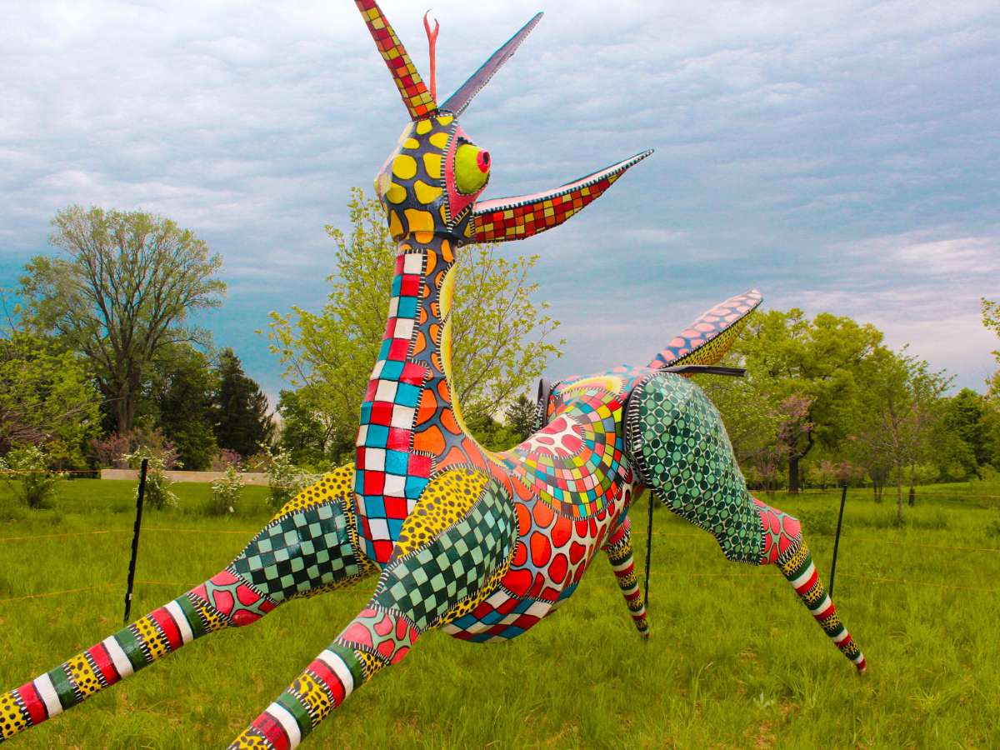
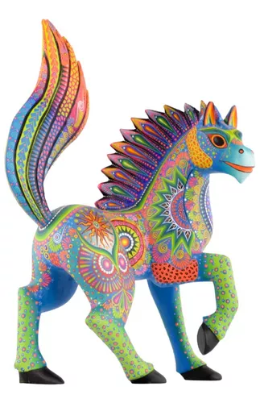

Sobre los alebrijes
¿Qué son los alebrijes?
Origen de la idea

Las criaturas fueron inventadas en la década de 1940 por el artista mexicano Pedro Linares López, quien soñaba con criaturas multicolores que encarnaban diferentes partes del cuerpo de animales y cantaba “Alebrije” una y otra vez en su sueño. Cuando despertó, Linares creó la primera escultura de un Alebrije y, desde entonces, los animales se han convertido en una gran representación del arte popular mexicano.
¿Cuál es el significado de los alebrijes?

Alebrijes, las figuras fantásticas más coloridas del arte ...
Al ser parte del arte tradicional mexicano, se cree que regalar un alebrije ayuda a "espantar" a los malos espíritus de los hogares, especialmente aquellos alebrijes con un aspecto más "monstruoso". Asimismo, estos se consideran como un símbolo de buena suerte.